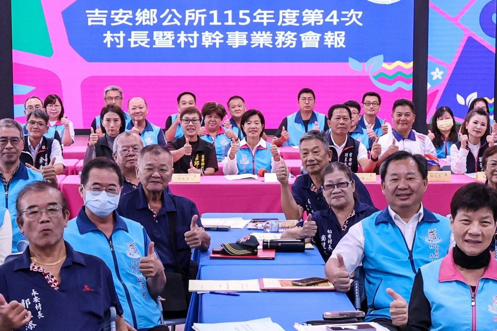

吉安八年蛻變有成 游淑貞邀鄉代村長共賞施政影片

可樂電子報小編/編輯
吉安鄉長游淑貞今（5）日於村長暨村幹事業務會報及鄉民代表會會期議程圓滿結束後，特別邀請全鄉十九村村長與全體鄉民代表，齊聚鄉公所二樓親民堂，共同觀賞《攜手共進迎向希望》施政成果紀錄影片。在全體公務團隊與基層民意幹部的見證下，透過大螢幕上一幕幕真實影像，回顧八年來攜手打拚的建設足跡，現場洋溢溫馨感人氛圍。

游淑貞感性表示，吉安鄉這八年來的每一項建設與每一次進步，都不是單一個人的功勞，而是鄉民代表會監督指導、十九位村長深入基層奔走、公所同仁戮力以赴，以及全體鄉親齊心信任的具體成果。她強調，八年歲月大家同心跨越挑戰，把對這片土地的熱愛化為實際行動，這份深厚的情誼與信任，正是吉安最珍貴的無形資產。
吉安鄉作為全臺灣人口第二多的鄉鎮，坐擁山海相依優勢且緊鄰花蓮市核心，更匯聚閩南、客家、原住民族與新住民多元文化。八年來，游淑貞率領公所團隊聚焦城鄉建設、文化觀光、住居安全與幸福、產業平衡等四大施政面向，推動二十項具體方針，逐步實現友善宜居、多元族群共榮、樂活休閒農遊及永續發展的長遠願景。

此次播映的施政成果紀錄影片歷時四個多月深入地方拍攝訪談，以6K超高畫質規格製作，特別邀請十位不同領域的基層見證人現身說法，取代傳統政績宣導的單向旁白，並規劃國語、臺語及客語三種語言版本。執導導演林景川分享，影片在十分鐘內濃縮八年蛻變精華，並特邀東華大學臺灣文學系副教授郭俊麟等學者與鄉民觀點，展現吉安的人文深度與未來脈動。
在施政亮點方面，鄉公所積極推動客語生活化、原住民族文化資產保存與傳統節慶活動，使文化母語在世代交替間永續紮根；同時透過美學造街、社區營造與在地創生，厚植文化新動能。在農業推廣上，全面輔導在地農特產行銷，打造專屬農業品牌，串聯農遊體驗與觀光動線，實質提升農產品附加價值，讓在地農民的辛勤耕耘被廣泛看見。

「八年有盡，情誼無限；職務有任期，服務沒有終點。」游淑貞特別向長年並肩奮戰的村長、代表與全體鄉親深深致謝，期盼將這部承載八年光陰的珍貴影像獻給所有吉安人，化為這座城市的集體美好記憶。她期勉團隊無論未來身在何種崗位，都要珍惜這份服務初心，持續攜手共進，共同為吉安開創新局與希望。
📸 更多現場紀實影像


🌟 掌握花蓮在地第一手資訊・歡迎訂閱追蹤
深度紀實報導、在地精采影音專題，第一時間接收最新消息！